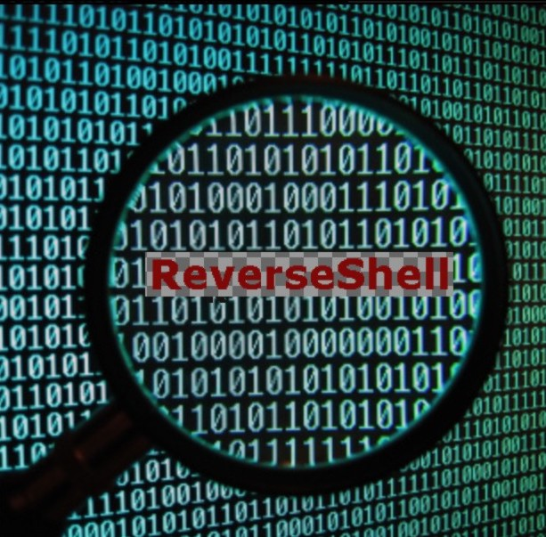
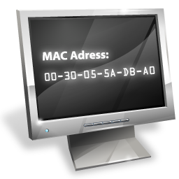
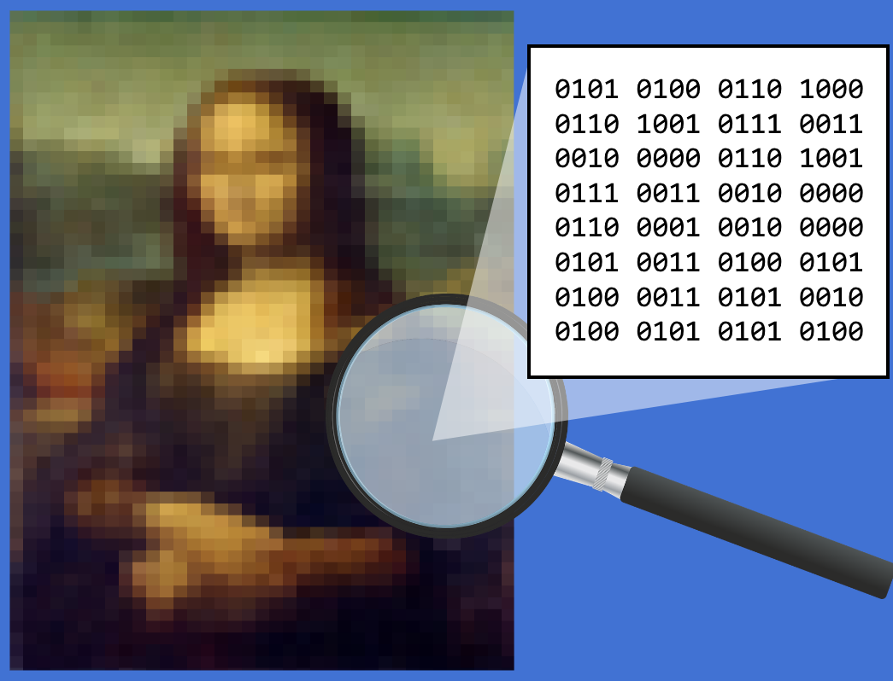

What Is a Keylogger?
Keyloggers or keystroke loggers are software programs or hardware devices that track the activities (keys pressed) of a keyboard. Keyloggers are a form of spyware where users are unaware their actions are being tracked. Keyloggers can be used for a variety of purposes; hackers may use them to maliciously gain access to your private information, while employers might use them to monitor employee activities. Some keyloggers can also capture your screen at random intervals; these are known as screen recorders. Keylogger software typically stores your keystrokes in a small file, which is either accessed later or automatically emailed to the person monitoring your actions.
Text Encryption-Decryption (Cipher)
Encryption is the process by which a readable message is converted to an unreadable form to prevent unauthorized parties from reading it. Decryption is the process of converting an encrypted message back to its original (readable) format. The original message is called the plaintext message. The encrypted message is called the ciphertext message.
Digital encryption algorithms work by manipulating the digital content of a plaintext message mathematically, using an encryption algorithm and a digital key to produce a ciphertext version of the message. The sender and recipient can communicate securely if the sender and recipient are the only ones who know the key.

Reverse Shell
There are many ways to gain control over a compromised system. A common practice is to gain interactive shell access, which enables you to try to gain complete control of the operating system. However, most basic firewalls block direct remote connections. One of the methods to bypass this is to use reverse shells.
A reverse shell is a program that executes local cmd.exe (for Windows) or bash/zsh (for Unix-like) commands and sends the output to a remote machine. With a reverse shell, the target machine initiates the connection to the attacker machine, and the attacker's machine listens for incoming connections on a specified port; this will bypass firewalls.

MAC Address Changer (For Linux OS only)
In a computer network, the MAC Address is used at the lowest networking level,where network interfaces
communicate with one another.
Need of changing MAC Address:
to bypass MAC Address filtering,
to bypass certain kind of MITM spoofing attack,
to avoid device tracking in a public network.
There are many other tasks like becoming anonymous in a network and to avoid some network attacks
where changing MAC Address becomes useful.

Image Steganography
Steganography is the art of hiding a message inside another message. In this case we will hide a text message inside an image. An image will most propably go unnotified, not a bunch of people will suspect a message hidden inside an image. Steganography is no means of encryption, just a way of hiding data inside an image.
Cyber Attact Impact Assessment
Tools such as anti-virus software, biometrics and personal
devices, e.g., the secure chip in a credit card or an ePassport
are digital security devices because they offer freedom to
communicate, work, travel and shop using your digital
identity in a way that is secure.
Digital security is an all-encompassing term, which includes
the tools to secure technology, assets and personal identity in
the online and mobile world.
If you need any kind of help regarding Cyber Security, Kindly